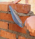
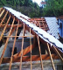
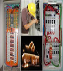
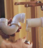
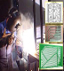

Pedreiros
Escolha o profissional para executar sua obra

Carpinteiros
Escolha o profissional para fazer seu telhado

Eletricistas
Escolha o profissional para realizar seu projeto elétrico

Encanadores
Escolha o profissional para cuidar da parte hidráulica

Serralheiros
Escolha o profissional para fazer portões, janelas, etc

Paisagistas
Escolha o profissional para fazer seu jardim
O Portal da Construção
A ideia da criação do Portal da Construção surgiu a partir do momento em que seu criador resolveu construir sua casa.
As dificuldades começaram já na hora de fazer o projeto da residência. A primeira pergunta que surgiu foi: Quem pode fazer isso para mim?
Depois do projeto pronto vem à tona mais uma dúvida: Quem eu vou contratar para construir minha casa? Encontrar pedreiro competente e
disponível é tão difícil hoje em dia. Aí começa a fase da procura. Pergunta um vizinho, um amigo, um amigo do amigo, um amigo do vizinho do amigo
e por aí vai. Começa a obra e depois surgem novas necessidades, como telhado, pintura, entre outros. Encontrar os profissionais para esses serviços
também não é nada fácil, ou NÃO ERA NADA FÁCIL. Com a criação do Portal da Construção o objetivo é facilitar a vida de quem vai construir, possibilitando
que ele encontre os profissionais adequados para cada serviço a ser executado, de uma forma simples e, o melhor, sem precisar sair de casa.
O Portal também traz benefícios para os profissionais cadastrados, uma vez que permite uma ampla divulgação de seus serviços, utilizando
a melhor forma encontrada atualmente: a INTERNET. Hoje em dia buscamos e encontramos quase tudo na internet. E porque não encontrar também
os profissionais que precisamos na hora da construção ou reforma do nosso imóvel? O Portal da Construção espera ser o elo de ligação que
faltava para ajudar na resolução desse problema tão comum nos dias de hoje. Para isso é importante também que todos ajudem a divulgar a ideia,
para que cada vez mais profissionais estejam cadastrados e para que cada vez mais pessoas sejam beneficiadas com o Portal.
Um grande abraço a todos e BOAS OBRAS!!!